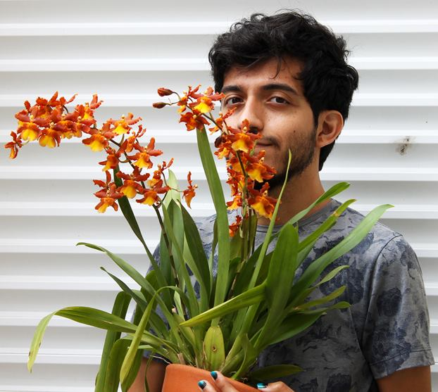

Tenho 29 anos e de formação sou bacharel em Geografia, e tenho a licenciatura também. Eu venho de um contexto de mudança de área, tô indo agora para a tecnologia. Mas eu queria ressaltar um pouco a bagagem que eu já tenho. Eu tenho experiências já ligadas à escola, seja um pouco com a docência ou outras atuações. Também com atendimento ao público, já atuei em instituição de ensino superior EAD. E também na minha então área, na Secretaria do Meio Ambiente de São Paulo, trabalhando com software SIG (Sistema de Informação Geográfica), mapeamento e sensoriamento remoto. E também no IBGE como agente de pesquisa, fazendo coleta de dados e mapeamento.
E eu acredito que é o que trago comigo, muita perspectiva, visão de mundo e que faz parte do que sou. Além da coragem de tentar algo novo agora. E eu tenho inglês intermediário. Eu busco aprender muita coisa, isso reflete um pouco como sou e nos meus hobbies que eu desenvolvi sozinho como por exemplo, jardinagem. Eu tenho muita planta! Fotografia, seja pela história da fotografia como na prática. Leitura, música e ainda quero ter autonomia pra tocar um instrumento, sei um pouquinho mas não o bastante. E eu sou uma pessoa muito calma, falo pouco, mas eu sou um ótimo ouvinte. Meus amigos sempre buscam por conselhos e sou muito prudente. Sou muito prestativo neste quesito, gosto muito de ajudar. Prezo pela harmonia entre as pessoas e eu sou um ótimo mediador. E hoje venho buscando pelo desafio nessa nova jornada, eu tenho formação recente de desenvolvedor Java Full Stack pela Generation BR. E eu busco uma oportunidade em que eu possa colocar em práticas estas habilidades como Dev Full Stack. E olhando pra trás, eu vejo que amo muito tudo que fiz, e eu vejo que também vou amar esta jornada.
"Segunda e quarta, natação Terça e quinta, atletismo Sexta, estudar Sábado, estudar inglês Domingo, ir casa tia"